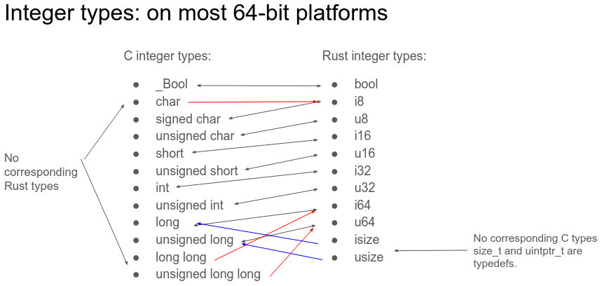
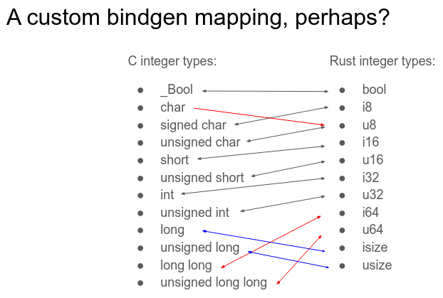

FFI type mismatches in Rust for Linux
At Kangrejos, Gary Guo wanted to discuss three problems with the way Rust and C code in the kernel interact: mismatched types, too many type casts, and the overhead of helper functions. To fix the first two problems, Guo proposed changing the way the kernel maps C types into Rust types. The last problem was a bit trickier, but he has a clever workaround for that, based on tricking the compiler into inlining the helper functions across language boundaries.
Types
Currently, the Rust-for-Linux project uses bindgen to generate the bindings between C code and Rust code. This works, but not all types can be translated perfectly. Guo shared some slides to illustrate the current state of translated integers:

In short, the mapping is platform-dependent and not one-to-one. This adds extra complexity for anyone trying to write code in one language that talks to code in the other language. Plus, some important types such as size_t and uintptr_t are typedefs, and not actual types on the C side, which makes the correspondence even less clear.
Carlos Bilbao asked why the translation couldn't take those typedefs into account, and map Rust's isize and usize to whatever size_t and uintptr_t resolve to. The problem is that bindgen works by reading C headers, Guo explained; because of C's implicit integer conversions, it is sometimes not clear whether a long in the C sources should be an i64 or an isize in the Rust code. The end result of this confusion is a lot of unnecessary casts that obscure the meaning of the code, he continued. Bindgen does have some special support for size_t, however. Greg Kroah-Hartman pointed out that the use of long in kernel C is deliberate — there is no native kernel type that corresponds to intptr_t. In fact, Linux requires that long must be able to contain a pointer.
Intended or not, these problems mean that type casts are frequently required in Rust code, since Rust does not have implicit integer conversions. Sometimes clippy, Rust's linting tool, will complain about redundant casts — but they aren't redundant on a different architecture, because the mapping between types is not the same. Also, the differing type names can cause problems for type tags for control-flow-integrity (CFI) protection — which work on the actual types of function arguments, not their sizes. Finally, the kernel defines char to be unconditionally unsigned, even on platforms where it is normally signed. Rust's c_char type respects the architecture's convention for the sign, so trying to use c_char to represent C char values can cause sign problems.
Guo proposed adopting a custom, fixed mapping for bindgen in the kernel, to try and alleviate some of these problems:

This change would not be a panacea — there are still a few edge cases. Among other problems, this mapping would still not work for CHERI systems. But overall, having a mapping that is consistent across architectures should make thinking about this code a lot less painful.
Kroah-Hartman did question the decision to map u8 back to unsigned char, instead of char, since the kernel defines char to always be unsigned. Unfortunately, the C standard has some strange wording around the different char types, and char and unsigned char are still treated as different types (with slightly different semantics) by the compiler, even when using -funsigned-char.
Helpers
The other problem Guo wanted to tackle was the inefficiencies caused by how the Rust-for-Linux project wraps C macros and inline functions. Bindgen cannot directly incorporate C macros into Rust code for obvious reasons. Instead, when Rust code needs to use something defined as a macro in C, the programmer writes an explicit wrapper function for it. The same workaround applies to inline functions. This prevents duplicating macros in both languages, but has a serious performance downside. Inline functions are often used when an operation is so performance-sensitive that a single function call is too much; so adding a helper function when calling them from Rust code is a problem.
Guo listed a few possible alternatives. One would be to change the policy against reimplementing macros in Rust. This is unpopular with kernel maintainers, but might be worth it for the most performance-sensitive cases. Another option to explore could be transpiling C macros to Rust code using c2rust. Unfortunately, c2rust is too big to include in the kernel repository, not packaged by any distributions, fragile, and requires nightly Rust. Guo doesn't believe that it's a reasonable option. The last possibility he put forward was cross-language link-time optimization (LTO). This would let the compiler automatically inline helper functions across language boundaries at link time, drastically reducing the performance impact. The downside is that LTO is slow, and sometimes breaks the kernel's build.
Andreas Hindborg suggested that it would be faster to just perform LTO on Rust modules. Guo agreed, observing that the project did not actually need full LTO in order to eliminate the overhead of the helpers — it would be sufficient to just inline the helpers into Rust call sites. This would be similar to Rust's default behavior for release builds, which uses ThinLTO.
To illustrate this idea, Guo put together a "hack
". His idea was to use
Clang to compile
helpers.c into LLVM bytecode. Then, for each Rust crate, ask the compiler to
emit bytecode as well. Once everything is in the form of LLVM bytecode, it can
be fed back into Clang with LTO turned on to produce a combined object file with the
helpers inlined. It's not a guarantee, because Clang might choose not to perform
the inlining, but it should help with performance. Guo tried it with the
existing Rust kernel code, and found that this approach did produce valid object
files,
but the block layer revealed another problem.
The main problem with this approach is linking the resulting objects back into the kernel. If the objects are linked as normal, there will be duplicate symbols from the independent copies of each helper function. A potential solution would be to use a different linkage. LLVM supports a nonstandard weak_odr linkage, in order to correctly handle C++'s one-definition rule. But this type of linkage can't currently be generated from C code. Paul McKenney asked whether it made sense to try to compile the helpers file with C++, in that case. That would require C++ support in the kernel, Guo pointed out.
He did have another workaround to try, however: textually manipulating the LLVM bytecode file after it is generated to add the appropriate attribute. When he tried that, however, LLVM no longer inlined the helpers. It turns out that LLVM has two checks that can prevent it from inlining a function: a check that the target attributes of both pieces of bytecode match, and that their -fno-delete-null-pointer-check settings are the same. Guo proposed passing a flag to LLVM to ignore the former check, and changing the compilation flags to avoid the latter.
With all of those changes in place, "everything works
" — but you do need
versions of Clang and Rust that use the same LLVM version. Functions are
inlined, the symbols don't cause linking errors, and it works for both built-in and
loadable modules. Hindborg tested it, and reported a speedup of a few percent,
Guo said.
He also suggested that with this tooling in place, it would even be possible to
generate the necessary helper functions automatically, which would be convenient.
Carlos Bilbao asked if there were cases for which this would not work, where the helpers cannot be inlined. Guo replied that there were not — functions that shouldn't be inlined don't need to be wrapped in helpers anyway.
Miguel Ojeda asked what could be done to support GCC with this approach. There must be a solution, Guo said, since GCC needs to support C++'s one-definition rule as well. But unlike LLVM, GCC doesn't make it easy to save and edit GIMPLE (GCC's intermediate representation). Boqun Feng suggested using GCC to compile the kernel, and Clang only to compile helpers.c. That wouldn't work, Guo explained, because GCC and Clang use different flags. Bindgen actually has some support for translating them, but making sure that there are not problems with the linked objects would be difficult.
Several audience members tossed around a few more suggestions for how Guo's approach could be used with GCC as well, but the session wrapped up before finding anything particularly actionable. It is not clear how stable his approach is, but a performance improvement of a few percent is sure to tempt people to keep working on it. In any case, the interface between Rust and C code in the kernel is an area of considerable interest, and likely to remain so for some time.
| Index entries for this article | |
|---|---|
| Kernel | Development tools/Rust |
| Conference | Kangrejos/2024 |
Posted Oct 11, 2024 19:03 UTC (Fri)
by rywang014 (guest, #167182)
[Link] (2 responses)
Something I can think of: mark the helpers.o symbols as "inline only". When linking: any objects referencing those symbols are force-LTO'ed; and after all linkings, delete those text and symbols.
Posted Oct 12, 2024 2:20 UTC (Sat)
by garyguo (subscriber, #173367)
[Link] (1 responses)
From LLVM IR level, inlinehint + linkonce_odr is essentially what you have described. It gets inlined during LTO, and unused functions get deleted without codegen functions get discarded without codegen. If LLVM heurstics decides not to inline something, the function gets emitted with weak linkage (if one doesn't want the heurstics, then replace inlinehint with alwaysinline).
It's just you cannot tweak clang to generate this combination. It was attempted previously: https://reviews.llvm.org/D18095, but it was rejected and the advice is keep post-processing IR.
Posted Oct 13, 2024 4:10 UTC (Sun)
by rywang014 (guest, #167182)
[Link]
Posted Oct 14, 2024 8:18 UTC (Mon)
by taladar (subscriber, #68407)
[Link]
Hacking vs Feature Request to Compiler
Hacking vs Feature Request to Compiler
Hacking vs Feature Request to Compiler
Restrictive tooling versions?